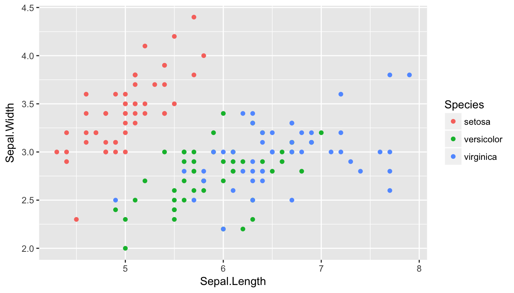
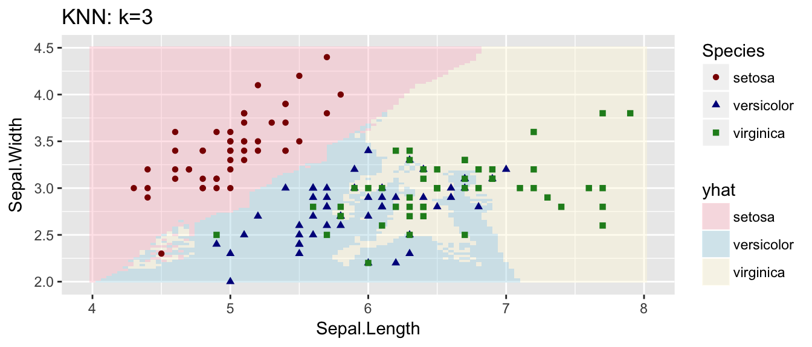
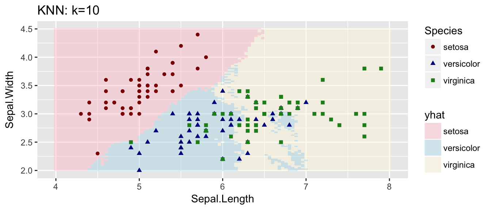
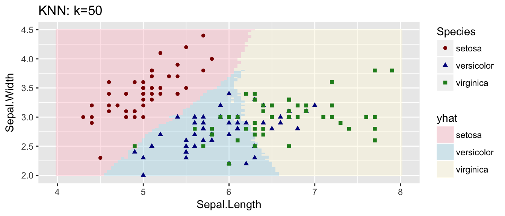
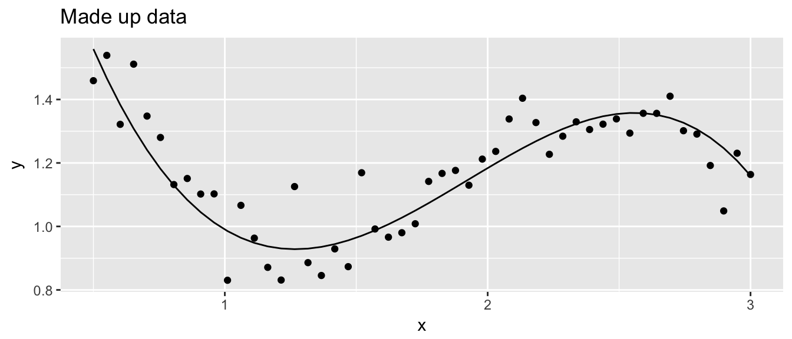
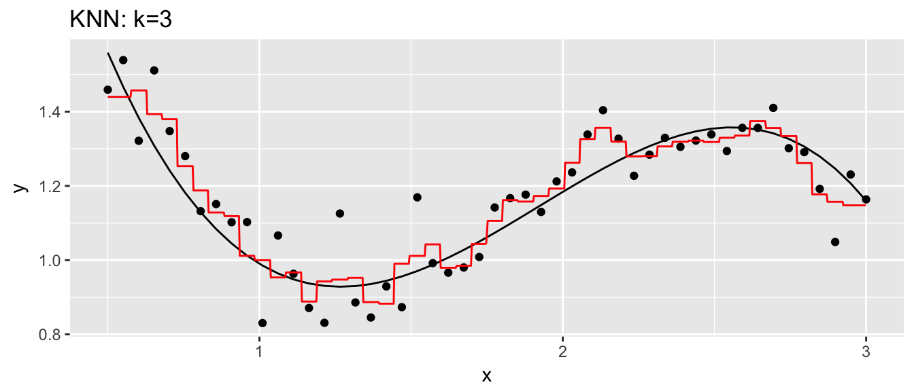
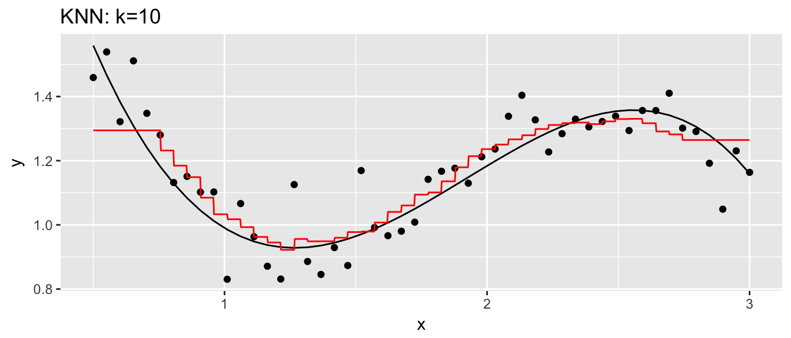
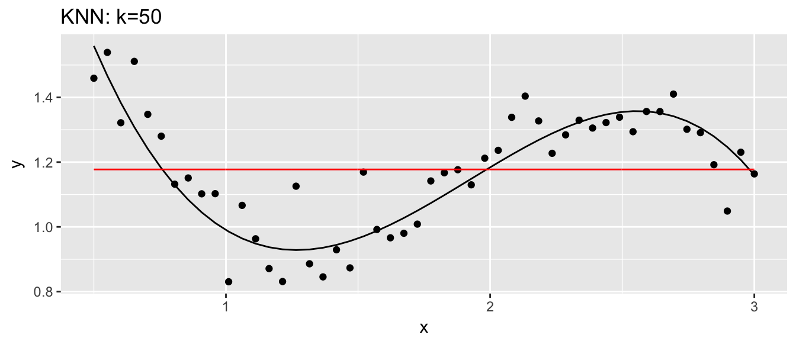
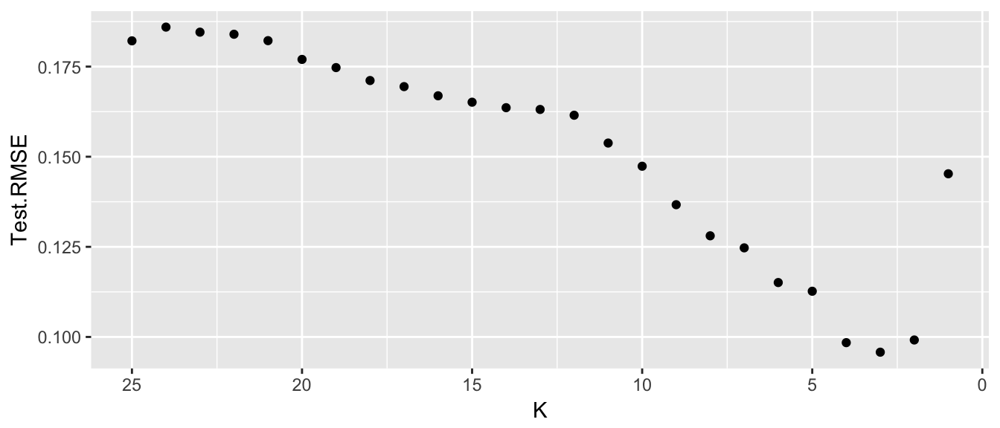

Chapter 3 Overview of Statistical Learning
Chapter 2 of Introduction to Statistical Learning is very conceptual and there isn’t much code to mess with, at least until the end. At the end of the chapter, they introduce the machine learning algorithm K-nearest Neighbors but don’t mention anything about how to do an analysis with it.
library(ggplot2)
library(dplyr)
library(caret) # for the train() functionThere are many packages in R that implement a wide variety of machine learning techniques, and each package works in slightly different ways based on the peculiarities of the individual package authors. Unfortunately makes working with these algorithms a pain because we have to learn how each package does things.
The R package caret attempts to resolve this by providing a uniform interface to the most widely used machine learning packages. Whenever possible we will use the caret interface, but there will be times where we have to resort to figuring out the peculiarities of specific packages.
If you are interested in more information about how the caret package works, and what methods are available, I’ve found the vignette and manual very helpful. If video tutorials are your thing, there is a DataCamp course and the introductory chapter is free.
3.1 K-Nearest Neighbors
K-nearest neighbors (KNN) is a technique in machine learning that is extremely simple to implement and extremely easy to understand. We will use this as a prototypical machine learning technique for supervised learning. The idea is that if we wish to predict a response, \(\hat{y}_0\) given some covariate(s) \(x_0\), then we look at the \(k\) nearest data points to \(x_0\) and take the average of those nearest \(y\) values (or in the classification setting, the group with highest representation within the \(k\) nearest neighbors).
3.1.1 KNN for Classification
Suppose we consider the iris dataset and we wish to provide a classifier for iris species based on the sepal length and sepal width.
ggplot(iris, aes(x=Sepal.Length, y=Sepal.Width, color=Species)) +
geom_point()
Clearly anything in the upper left should be Setosa, anything in the lower left should be Versicolor, and anything on the right half should be Virginica.
So lets consider KNN.
model <- train(Species ~ Sepal.Length + Sepal.Width, data=iris,
method='knn', tuneGrid=data.frame(k=3))
# expand.grid() makes a data.frame() with all possible combinations
Pred.grid <- expand.grid( Sepal.Length = seq(4, 8, length=101),
Sepal.Width = seq(2, 4.5, length=101) )
Pred.grid$yhat <- predict(model, newdata=Pred.grid)Now that we have the predicted classifications for the grid, lets graph it.
ggplot(Pred.grid, aes(x=Sepal.Length, y=Sepal.Width)) +
geom_tile(aes(fill=yhat), alpha=.4) +
geom_point(data=iris, aes(color=Species, shape=Species)) +
scale_color_manual(values=c('dark red', 'dark blue','forestgreen')) +
scale_fill_manual(values=c('pink', 'light blue','cornsilk')) +
ggtitle('KNN: k=3')
Now we want to see what happens as we vary \(k\).
Current.K <- 10
model <- train(Species ~ Sepal.Length + Sepal.Width, data=iris,
method='knn', tuneGrid=data.frame(k=Current.K))
Pred.grid$yhat <- predict(model, Pred.grid)
ggplot(Pred.grid, aes(x=Sepal.Length, y=Sepal.Width)) +
geom_tile(aes(fill=yhat), alpha=.4) +
geom_point(data=iris, aes(color=Species, shape=Species)) +
scale_color_manual(values=c('dark red', 'dark blue','forestgreen')) +
scale_fill_manual(values=c('pink', 'light blue','cornsilk')) +
ggtitle(paste('KNN: k=', Current.K, sep=''))
Current.K <- 50
model <- train(Species ~ Sepal.Length + Sepal.Width, data=iris,
method='knn', tuneGrid=data.frame(k=Current.K))
Pred.grid$yhat <- predict(model, Pred.grid)
ggplot(Pred.grid, aes(x=Sepal.Length, y=Sepal.Width)) +
geom_tile(aes(fill=yhat), alpha=.4) +
geom_point(data=iris, aes(color=Species, shape=Species)) +
scale_color_manual(values=c('dark red', 'dark blue','forestgreen')) +
scale_fill_manual(values=c('pink', 'light blue','cornsilk')) +
ggtitle(paste('KNN: k=', Current.K, sep=''))
3.1.2 KNN for Regression
set.seed(8675309)
n <- 50
data <- data.frame( x=seq(.5,3, length=n) ) %>%
mutate( Ey = 2 - 4*x + 3*x^2 - .55*x^3 + cos(x),
y = Ey + rnorm(n, sd=.1))
ggplot(data, aes(x=x)) +
geom_line(aes(y=Ey)) +
geom_point(aes(y=y)) +
labs(main='foo', y='y', title='Made up data')
# values of x where we wish to make a prediction
Pred.grid <- data.frame(x=seq(0.5, 3, length=1001))Current.K <- 3
model <- train(y~x, data=data, method='knn', tuneGrid=data.frame(k=Current.K))
Pred.grid$yhat <- predict(model, Pred.grid)
ggplot(data, aes(x=x)) +
geom_line(aes(y=Ey)) +
geom_point(aes(y=y)) +
geom_line( data=Pred.grid, aes(y=yhat), color='red') +
labs(main='foo', y='y', title=paste('KNN: k=', Current.K, sep=''))
Current.K <- 10
model <- train(y~x, data=data, method='knn', tuneGrid=data.frame(k=Current.K))
Pred.grid$yhat <- predict(model, Pred.grid)
ggplot(data, aes(x=x)) +
geom_line(aes(y=Ey)) +
geom_point(aes(y=y)) +
geom_line( data=Pred.grid, aes(y=yhat), color='red') +
labs(main='foo', y='y', title=paste('KNN: k=', Current.K, sep=''))
Current.K <- 50
model <- train(y~x, data=data, method='knn', tuneGrid=data.frame(k=Current.K))
Pred.grid$yhat <- predict(model, Pred.grid)
ggplot(data, aes(x=x)) +
geom_line(aes(y=Ey)) +
geom_point(aes(y=y)) +
geom_line( data=Pred.grid, aes(y=yhat), color='red') +
labs(main='foo', y='y', title=paste('KNN: k=', Current.K, sep=''))
3.2 Splitting into a test and training sets
We continue to consider the Regression problem but we now consider splitting the data into Training and Test sets and comparing the Root Mean Squared Error (RMSE) of Test sets for various values of \(K\).
Train <- data %>% sample_frac(.5)
Test <- setdiff(data, Train)
K <- 5
model <- train(y ~ x, data=Train, method='knn', tuneGrid=data.frame(k=K) )
Test$yhat <- predict(model, Test)
Test %>% mutate(resid = y-yhat) %>%
summarise( Test.RMSE = sqrt(mean( resid^2 )), K = K)## Test.RMSE K
## 1 0.1107162 5Now that we see how to calculate the Test Mean Squared Error, lets look at a range of values for \(K\).
Results <- NULL
for(K in 1:25){
model <- train(y ~ x, data=Train, method='knn', tuneGrid=data.frame(k=K) )
Test$yhat <- predict(model, Test)
Temp <- Test %>% mutate(resid = y-yhat) %>%
summarise( Test.RMSE = sqrt(mean( resid^2 )), K = K)
Results <- rbind(Results, Temp)
}## Warning in nominalTrainWorkflow(x = x, y = y, wts = weights, info =
## trainInfo, : There were missing values in resampled performance measures.
## Warning in nominalTrainWorkflow(x = x, y = y, wts = weights, info =
## trainInfo, : There were missing values in resampled performance measures.ggplot(Results, aes(x=K, y=Test.RMSE)) +
geom_point() +
scale_x_reverse() # so model complexity increases along x-axis.
3.3 Exercises
- ISL 2.1: For each part below, indicate whether we would generally expect the performance of a flexible statistical learning method to be better or worse than an inflexible method. Justify your answer.
- The sample size n is extremely large, and the number of predictors p is small.
- The number of predictors p is extremely large, and the number of observations n is small.
- Relationship between the predictors and response is highly non-linear.
- The variance of the error terms, i.e. \(\sigma^{2}=Var\left(\epsilon\right)\), is extremely high.
- ISL 2.2: Explain whether each scenario is a classification or regression problem, and indicate whether we are most interested in inference or prediction. Finally, provide \(n\) and \(p\).
- We collect a set of data on the top 500 firms in the US. For each firm we record profit, number of employees, industry and the CEO salary. We are interested in understanding which factors affect CEO salary.
- We are considering launching a new product and wish to know whether it will be a
successorfailure. We collect data on 20 similar products that were previously launched. For each product we have record whether it was a success or failure, price charged for the product, marketing budget, competition price, and ten other variables. - We are interested in predicting the % change in the US dollar in relation to the weekly changes in the world stock markets. Hence we collect weekly data for all of 2012. For each week we record the % change in the dollar, the % change in the US market, the % change in the British market, and the % change in the German market.
- ISL 2.3: We new revisit the bias-variance decomposition.
- Provide a sketch of typical (squared) bias, variance, training error, test error, and Bayes (or irreducible) error curves, on a single plot, as we go from less flexible statistical learning methods towards more flexible approaches. The x-axis should represent the amount of flexibility in the method, and the y-axis should represent the values for each curve. There should be five curves. Make sure to label each one.
- Explain why each of the five curves has the shape displayed in part (a).